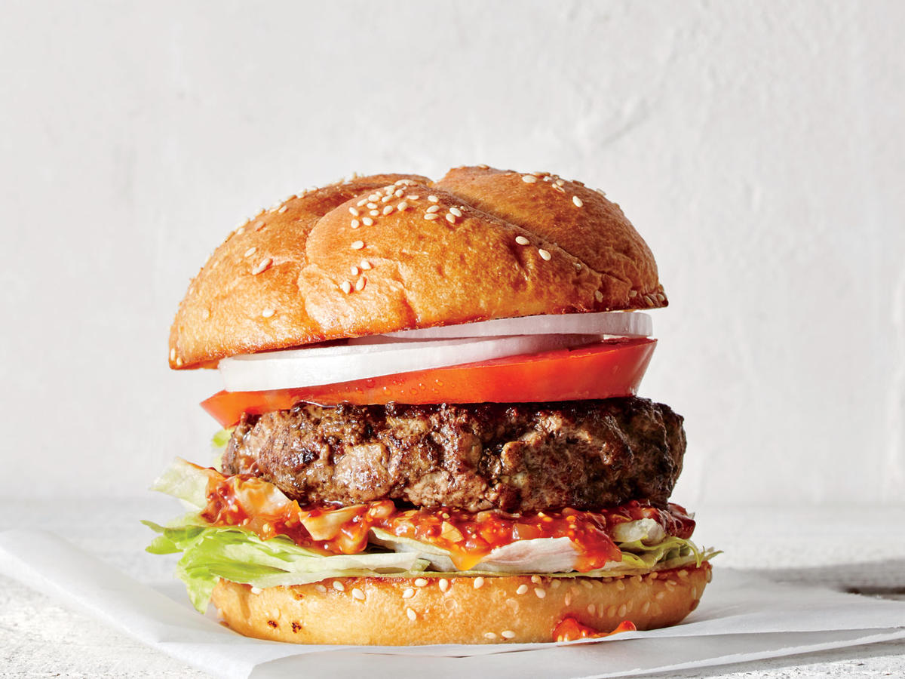

Let's get to cooking
The classic grilled sandwich that consists of ground meat made into a patty, cooked, topped with a slice of cheese, and placed between two halves of a bun to create this favorite international food. Typically made with ground beef, the meat is produced by grinding and blending together various cuts of beef including meat from the shoulder, brisket, and loin
Ingredients
- 2lbs/907g freshly ground beef, (at least 80% lean, a.k.a. 80/20)
- 1 tablespoon onion powder
- 1 teaspoon salt
- 1 teaspoon freshly ground black pepper
- 12 slices deli-counter American cheese
- 6 large burger buns, preferably homemade, toasted if desired
To garnish
- Ketchup
- Mayonnaise
- Thousand island dressing
- Sliced red onion
- Sliced tomatoes
- Sliced pickles
- Fresh lettuce leaves
Instructions
Method:
- In a large bowl, mix ground beef, onion powder, salt and pepper until just combined. Do not over-mix, or your patties will be tough.
- Divide into six portions and form patties, without pressing too hard. They should be uniform in thickness. Smooth out any cracks using your fingers. Make these right before you grill them, so they stay at room temperature.
- Preheat your grill, grill pan or cast-iron skillet to high heat and add burger patties. If using a grill, cover with the lid.
- Cook until the crust that forms on the bottom of the burger releases it from the pan or grate — about 2 minutes. Gently test, but don't flip it until it gets to this point. When burgers lift up easily, flip, add two slices of cheese to each, close lid if using a grill, and cook on the other side for another 2-3 minutes for medium to medium rare.
- Remove burgers with a sturdy metal spatula and transfer to a plate. Allow to rest for several minutes, then transfer to buns.
- Garnish as desired and serve immediately.
Return to top
Return to main